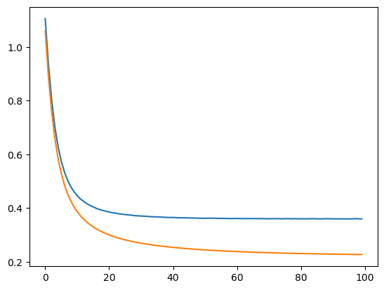

import torch
import numpy as np
import random
import time
from torch.utils.data import Dataset
class ModelTemplate():
def __init__(self, model, loss_fn, optimizer):
self.model = model
self.loss_fn = loss_fn
self.optimizer = optimizer
self.device = 'cuda' if torch.cuda.is_available() else 'cpu'
self.model.to(self.device)
self.stats = {'losses': [],
'val_losses': [],
'train_time': [],
'val_time': [],
'n_epochs': 0}
def set_seed(self, seed=42):
torch.backends.cudnn.deterministic = True
torch.backends.cudnn.benchmark = False
torch.manual_seed(seed)
np.random.seed(seed)
random.seed(seed)
def save(self, filename='model.pth'):
model_state = {
'model': self.model.state_dict(),
'optimizer': self.optimizer.state_dict(),
'stats': self.stats
}
torch.save(model_state, filename)
def load(self, filename='model.pth'):
model_state = torch.load(filename, weights_only=False)
self.model.load_state_dict(model_state['model'])
self.optimizer.load_state_dict(model_state['optimizer'])
self.stats = model_state['stats']
self.model.train()
def log_update(self, train_time, loss, val_time, val_loss, train_loader, val_loader):
self.stats['train_time'].append(train_time)
self.stats['losses'].append(loss)
self.stats['val_time'].append(val_time)
self.stats['val_losses'].append(val_loss)
self.stats['n_epochs'] += 1
def log_output(self, verbose=1, formatstr=''):
s = [f'epoch {self.stats['n_epochs']}',
f'train_time: {{{formatstr}}}'.format(self.stats['train_time'][-1]),
f'loss: {{{formatstr}}}'.format(self.stats['losses'][-1])]
if self.stats['val_losses'][-1] is not None:
s.append(f'val_time: {{{formatstr}}}'.format(self.stats['val_time'][-1]))
s.append(f'val_loss: {{{formatstr}}}'.format(self.stats['val_losses'][-1]))
if verbose == 1:
print(' '.join(s))
return s
class metrics():
def __init__(self):
self.acc = []
def update(self, yhat, y):
self.acc.append((yhat==y).sum().item())
def _train_one_epoch(self, dataloader):
self.model.train()
losses = []
for X_batch, y_batch in dataloader:
X_batch = X_batch.to(self.device)
y_batch = y_batch.to(self.device)
yhat = self.model(X_batch)
loss = self.loss_fn(yhat, y_batch)
loss.backward()
self.optimizer.step()
self.optimizer.zero_grad()
losses.append(loss.item())
return np.mean(losses)
def _eval_one_epoch(self, dataloader):
self.model.eval()
losses = []
for X_batch, y_batch in dataloader:
X_batch = X_batch.to(self.device)
y_batch = y_batch.to(self.device)
yhat = self.model(X_batch)
loss = self.loss_fn(yhat, y_batch)
losses.append(loss.item())
return np.mean(losses)
def train(self, train_loader, val_loader=None, epoch_num=10, verbose=0, SEED=42):
self.set_seed(SEED)
for _ in range(epoch_num):
start_time = time.time()
loss = self._train_one_epoch(train_loader)
end_time = time.time()
train_time = end_time - start_time
val_loss = None
val_time = None
if val_loader is not None:
start_time = time.time()
val_loss = self._eval_one_epoch(val_loader)
end_time = time.time()
val_time = end_time - start_time
self.log_update(train_time, loss, val_time, val_loss, train_loader, val_loader)
self.log_output(verbose=verbose)
def predict(self, X):
self.model.eval()
X_tensor = torch.as_tensor(X, dtype=float)
y_tensor = self.model(X_tensor.to(self.device))
self.model.train()
y = y_tensor.detach().cpu().numpy()
return y
class __MyModel__(ModelTemplate):
def __init__(self, model, loss_fn, optimizer):
super().__init__(model, loss_fn, optimizer)
self.stats['p'] = []
def log_update(self, train_time, loss, val_time, val_loss):
super().log_update(train_time, loss, val_time, val_loss)
p = self.model.state_dict()
self.stats['p'].append([p['linear.bias'].item(), p['linear.weight'].item()])
def log_output(self, verbose=0):
s = super().log_output(verbose=0, formatstr=':.6f')
s.append(f'p: [{self.stats['p'][-1][0]:.6f}, {self.stats['p'][-1][1]:.6f}]')
if verbose == 1:
print(' '.join(s))
return s
class __MyData__(Dataset):
def __init__(self, x, y):
self.x = torch.tensor(x, dtype=float).reshape(-1, 1)
self.y = torch.tensor(y, dtype=float).reshape(-1, 1)
def __getitem__(self, index):
return (self.x[index], self.y[index])
def __len__(self):
return len(self.y)import pandas as pd
import numpy as np
from sklearn.model_selection import train_test_split
# url = 'http://archive.ics.uci.edu/ml/machine-learning-databases/horse-colic/horse-colic.data'
# df = pd.read_csv(url, sep='\\s+', header=None)
# df = df.replace("?", np.NaN)
# df.fillna(0, inplace=True)
# df = df.drop(columns=[2, 24, 25, 26, 27])
# df[23] = df[23].replace({1: 1, 2: 0})
# X = df.iloc[:, :-1].to_numpy().astype(float)
# y = df[23].to_numpy().astype(int)
from sklearn.datasets import make_moons
X, y = make_moons(n_samples=100, noise=0.3, random_state=0)
X_train, X_test, y_train, y_test = train_test_split(X, y, test_size=0.2, random_state=13)
from sklearn.preprocessing import StandardScaler
mms = StandardScaler()
X_train = mms.fit_transform(X_train, y_train)
X_test = mms.transform(X_test)
import torch
from torch.utils.data import Dataset, DataLoader
class MyData(Dataset):
def __init__(self, X, y):
self.X = torch.tensor(X, dtype=float)
self.y = torch.tensor(y, dtype=float).reshape(-1, 1)
def __getitem__(self, index):
return (self.X[index], self.y[index])
def __len__(self):
return len(self.y)
train_set = MyData(X_train, y_train)
val_set = MyData(X_test, y_test)
train_loader = DataLoader(train_set, batch_size=16, shuffle=True)
val_loader = DataLoader(val_set, batch_size=16)X_trainarray([[-0.59635346, -0.51713419],
[ 0.3937561 , -1.35813138],
[ 1.33167696, -1.16636502],
[-1.52208256, -0.33314461],
[-1.20280449, 0.64649722],
[-0.65443973, 0.48658224],
[ 1.00612744, -1.81018492],
[-0.28996374, -1.5477782 ],
[ 0.03349394, -0.65113935],
[-0.94744907, 0.76650095],
[ 0.61340448, -1.50292036],
[ 1.90666775, -0.49298432],
[-1.51519782, -0.37657626],
[ 0.83679088, 1.55233811],
[-0.5673415 , 0.20360244],
[ 1.34884731, -0.7930775 ],
[-0.19406929, 0.92544509],
[-1.57387163, -1.21907634],
[-0.72861616, 1.22434395],
[ 1.36732327, 0.53003428],
[-1.16333041, 1.31264925],
[-0.49927845, 1.19894001],
[ 1.24056139, -1.50978838],
[-0.31599591, -0.18511142],
[-0.00410317, -0.69877045],
[-0.39572336, 1.22179345],
[-1.59788135, 1.05926647],
[-0.95127788, 1.20886702],
[ 0.2648369 , -1.79475603],
[-0.84669415, 0.57440659],
[-2.01025248, 0.25426273],
[-0.68877598, 1.63174209],
[-0.81948226, -0.13096199],
[-0.25959788, 0.96883437],
[-0.9448469 , 1.42130415],
[ 0.05654946, 1.19227583],
[-0.19697736, 0.86227843],
[ 0.10293951, 0.11073556],
[-1.10929041, 0.68244118],
[ 0.17772649, 0.80935964],
[ 0.53099826, -1.71623851],
[ 0.50765113, 1.86604068],
[ 0.69070656, -1.07181241],
[-0.39213398, -1.09063717],
[ 0.18001833, -1.20377141],
[ 0.33221211, -0.19699459],
[-0.96156663, -0.84810398],
[ 1.82998888, 0.65461827],
[-0.50673058, -0.27452625],
[-0.45771551, 0.49445865],
[ 0.2314398 , 0.80672703],
[ 0.77520027, 0.54793829],
[ 1.16651035, -0.53024088],
[ 0.90647024, -1.27723826],
[ 1.61393402, -0.16564036],
[-1.27110231, -0.67144823],
[-0.80001929, 0.8500904 ],
[ 1.83249665, -0.5320639 ],
[-0.31387723, -0.56854037],
[ 1.70753925, -0.97251755],
[-1.98598605, -0.14608289],
[-0.01583184, -0.78153782],
[ 0.76739167, 0.47170384],
[ 1.5526051 , -0.47315054],
[ 0.45300973, -0.58150638],
[ 0.27289479, 0.29464525],
[-0.13692804, -1.59126758],
[ 1.72939165, -0.24810312],
[ 0.53182616, -1.15783589],
[ 1.4118482 , 0.31439228],
[-0.1751801 , 0.02570472],
[ 0.22281591, 2.17885977],
[-0.7004349 , 1.15638464],
[ 0.14340787, 0.06899817],
[-0.28467735, 1.76048387],
[-1.3702369 , -1.09617967],
[-0.19749714, 1.61135463],
[ 1.86682733, 0.32102674],
[-1.68139218, -0.18335051],
[ 0.90912128, -0.80123927]])X_train[0].size2from torch.utils.data import TensorDataset
xxx = TensorDataset(torch.as_tensor(X_train))
yyy = TensorDataset(torch.as_tensor(y_train))xxx[0](tensor([-0.5964, -0.5171], dtype=torch.float64),)import torch.nn as nn
from torch.nn.modules import Linear
class LoR(nn.Module):
def __init__(self, *args, **kwargs) -> None:
super().__init__(*args, **kwargs)
self.linear = Linear(in_features=2, out_features=1, dtype=float)
self.activation = nn.Sigmoid()
def forward(self, X):
# pred = self.activation(self.linear(X))
pred = self.linear(X)
# return (pred >= 0).float()
return predlen(train_loader.dataset)80class LoRModel(ModelTemplate):
def __init__(self, model, loss_fn, optimizer):
super().__init__(model, loss_fn, optimizer)
self.stats['acc_train'] = []
self.stats['acc_val'] = []
def compute_acc(self, dataloader):
with torch.no_grad():
acc = []
for X_batch, y_batch in dataloader:
yhat = torch.sigmoid(self.model(X_batch))
y_pred = (yhat>=0.5).to(float)
acc.append((y_pred==y_batch).sum().item())
# print(acc_train)
return np.sum(acc)/len(dataloader.dataset)
def log_update(self, train_time, loss, val_time, val_loss, train_loader, val_loader):
super().log_update(train_time, loss, val_time, val_loss, train_loader, val_loader)
acc_train = self.compute_acc(train_loader)
acc_val = self.compute_acc(val_loader)
self.stats['acc_train'].append(acc_train)
self.stats['acc_val'].append(acc_val)
# p = self.model.state_dict()
# self.stats['acc'].append([p['linear.bias'].item(), p['linear.weight'].item()])
def log_output(self, verbose=0):
s = super().log_output(verbose=0, formatstr=':.6f')
s.append(f'acc_train: {self.stats['acc_train'][-1]:.6f}')
s.append(f'acc_val: {self.stats['acc_val'][-1]:.6f}')
# s.append(f'p: [{self.stats['p'][-1][0]:.6f}, {self.stats['p'][-1][1]:.6f}]')
if verbose == 1:
print(' '.join(s))
return sttt = train_loader.dataset[0][0]
(ttt<-0.55).to(float)tensor([1., 0.], dtype=torch.float64)from torch.optim import SGD
from torch.nn import BCEWithLogitsLoss, BCELoss
original_model = LoR()
model = LoRModel(model=original_model, loss_fn=BCEWithLogitsLoss(),
optimizer=SGD(original_model.parameters(), lr = 0.1))
model.train(train_loader, val_loader, epoch_num=100, verbose=1)epoch 1 train_time: 0.002500 loss: 0.583988 val_time: 0.001504 val_loss: 0.528253 acc_train: 0.687500 acc_val: 0.750000
epoch 2 train_time: 0.003004 loss: 0.544656 val_time: 0.001507 val_loss: 0.490200 acc_train: 0.725000 acc_val: 0.750000
epoch 3 train_time: 0.003499 loss: 0.513808 val_time: 0.001000 val_loss: 0.459465 acc_train: 0.762500 acc_val: 0.750000
epoch 4 train_time: 0.004028 loss: 0.490238 val_time: 0.000000 val_loss: 0.434522 acc_train: 0.762500 acc_val: 0.750000
epoch 5 train_time: 0.002996 loss: 0.470588 val_time: 0.001306 val_loss: 0.413784 acc_train: 0.787500 acc_val: 0.850000
epoch 6 train_time: 0.002999 loss: 0.455354 val_time: 0.000000 val_loss: 0.396341 acc_train: 0.787500 acc_val: 0.850000
epoch 7 train_time: 0.003015 loss: 0.442161 val_time: 0.000506 val_loss: 0.381378 acc_train: 0.787500 acc_val: 0.850000
epoch 8 train_time: 0.004508 loss: 0.431538 val_time: 0.001000 val_loss: 0.368658 acc_train: 0.800000 acc_val: 0.850000
epoch 9 train_time: 0.003007 loss: 0.423078 val_time: 0.000999 val_loss: 0.357589 acc_train: 0.800000 acc_val: 0.850000
epoch 10 train_time: 0.003774 loss: 0.415550 val_time: 0.001034 val_loss: 0.347798 acc_train: 0.812500 acc_val: 0.850000
epoch 11 train_time: 0.003506 loss: 0.409800 val_time: 0.000000 val_loss: 0.339239 acc_train: 0.812500 acc_val: 0.850000
epoch 12 train_time: 0.003011 loss: 0.404439 val_time: 0.000000 val_loss: 0.331551 acc_train: 0.812500 acc_val: 0.850000
epoch 13 train_time: 0.004085 loss: 0.399152 val_time: 0.001007 val_loss: 0.324653 acc_train: 0.812500 acc_val: 0.850000
epoch 14 train_time: 0.002000 loss: 0.395443 val_time: 0.000999 val_loss: 0.318408 acc_train: 0.812500 acc_val: 0.850000
epoch 15 train_time: 0.003522 loss: 0.391562 val_time: 0.000000 val_loss: 0.312845 acc_train: 0.812500 acc_val: 0.850000
epoch 16 train_time: 0.003505 loss: 0.388744 val_time: 0.001006 val_loss: 0.307758 acc_train: 0.812500 acc_val: 0.850000
epoch 17 train_time: 0.004012 loss: 0.385834 val_time: 0.000000 val_loss: 0.303090 acc_train: 0.812500 acc_val: 0.850000
epoch 18 train_time: 0.003023 loss: 0.383823 val_time: 0.001045 val_loss: 0.298812 acc_train: 0.812500 acc_val: 0.850000
epoch 19 train_time: 0.004508 loss: 0.381274 val_time: 0.004290 val_loss: 0.294840 acc_train: 0.825000 acc_val: 0.850000
epoch 20 train_time: 0.003507 loss: 0.379619 val_time: 0.001008 val_loss: 0.291185 acc_train: 0.825000 acc_val: 0.850000
epoch 21 train_time: 0.004023 loss: 0.377856 val_time: 0.000000 val_loss: 0.287807 acc_train: 0.825000 acc_val: 0.850000
epoch 22 train_time: 0.003033 loss: 0.376156 val_time: 0.001180 val_loss: 0.284632 acc_train: 0.837500 acc_val: 0.850000
epoch 23 train_time: 0.003001 loss: 0.374744 val_time: 0.001026 val_loss: 0.281722 acc_train: 0.837500 acc_val: 0.850000
epoch 24 train_time: 0.003572 loss: 0.373640 val_time: 0.001000 val_loss: 0.278988 acc_train: 0.837500 acc_val: 0.850000
epoch 25 train_time: 0.004079 loss: 0.372312 val_time: 0.000000 val_loss: 0.276432 acc_train: 0.825000 acc_val: 0.850000
epoch 26 train_time: 0.003002 loss: 0.371661 val_time: 0.000996 val_loss: 0.274017 acc_train: 0.825000 acc_val: 0.850000
epoch 27 train_time: 0.004022 loss: 0.371195 val_time: 0.000000 val_loss: 0.271807 acc_train: 0.825000 acc_val: 0.850000
epoch 28 train_time: 0.002506 loss: 0.370171 val_time: 0.001006 val_loss: 0.269707 acc_train: 0.812500 acc_val: 0.850000
epoch 29 train_time: 0.004007 loss: 0.368741 val_time: 0.000000 val_loss: 0.267695 acc_train: 0.812500 acc_val: 0.850000
epoch 30 train_time: 0.002540 loss: 0.368096 val_time: 0.000995 val_loss: 0.265834 acc_train: 0.825000 acc_val: 0.850000
epoch 31 train_time: 0.005020 loss: 0.367788 val_time: 0.001008 val_loss: 0.264072 acc_train: 0.825000 acc_val: 0.850000
epoch 32 train_time: 0.003001 loss: 0.366918 val_time: 0.001506 val_loss: 0.262383 acc_train: 0.825000 acc_val: 0.850000
epoch 33 train_time: 0.004537 loss: 0.367190 val_time: 0.001000 val_loss: 0.260777 acc_train: 0.825000 acc_val: 0.850000
epoch 34 train_time: 0.004017 loss: 0.366243 val_time: 0.001000 val_loss: 0.259291 acc_train: 0.825000 acc_val: 0.850000
epoch 35 train_time: 0.005353 loss: 0.365999 val_time: 0.000000 val_loss: 0.257874 acc_train: 0.825000 acc_val: 0.850000
epoch 36 train_time: 0.002549 loss: 0.364988 val_time: 0.001235 val_loss: 0.256532 acc_train: 0.825000 acc_val: 0.850000
epoch 37 train_time: 0.004004 loss: 0.364841 val_time: 0.000999 val_loss: 0.255260 acc_train: 0.825000 acc_val: 0.850000
epoch 38 train_time: 0.003514 loss: 0.364328 val_time: 0.001002 val_loss: 0.254068 acc_train: 0.825000 acc_val: 0.850000
epoch 39 train_time: 0.003509 loss: 0.363944 val_time: 0.001510 val_loss: 0.252881 acc_train: 0.825000 acc_val: 0.850000
epoch 40 train_time: 0.003000 loss: 0.363615 val_time: 0.001506 val_loss: 0.251749 acc_train: 0.825000 acc_val: 0.850000
epoch 41 train_time: 0.002510 loss: 0.363260 val_time: 0.001003 val_loss: 0.250705 acc_train: 0.825000 acc_val: 0.850000
epoch 42 train_time: 0.005514 loss: 0.363657 val_time: 0.000506 val_loss: 0.249683 acc_train: 0.825000 acc_val: 0.850000
epoch 43 train_time: 0.002999 loss: 0.363037 val_time: 0.000000 val_loss: 0.248684 acc_train: 0.825000 acc_val: 0.850000
epoch 44 train_time: 0.002522 loss: 0.362824 val_time: 0.002007 val_loss: 0.247741 acc_train: 0.837500 acc_val: 0.850000
epoch 45 train_time: 0.003505 loss: 0.362652 val_time: 0.001505 val_loss: 0.246838 acc_train: 0.837500 acc_val: 0.850000
epoch 46 train_time: 0.004003 loss: 0.362324 val_time: 0.001511 val_loss: 0.246010 acc_train: 0.837500 acc_val: 0.850000
epoch 47 train_time: 0.003512 loss: 0.362041 val_time: 0.001003 val_loss: 0.245197 acc_train: 0.837500 acc_val: 0.850000
epoch 48 train_time: 0.004516 loss: 0.361953 val_time: 0.001004 val_loss: 0.244408 acc_train: 0.837500 acc_val: 0.850000
epoch 49 train_time: 0.004000 loss: 0.361793 val_time: 0.000504 val_loss: 0.243638 acc_train: 0.837500 acc_val: 0.850000
epoch 50 train_time: 0.002003 loss: 0.361834 val_time: 0.001001 val_loss: 0.242950 acc_train: 0.837500 acc_val: 0.850000
epoch 51 train_time: 0.002507 loss: 0.361984 val_time: 0.001509 val_loss: 0.242281 acc_train: 0.837500 acc_val: 0.850000
epoch 52 train_time: 0.004003 loss: 0.361210 val_time: 0.001000 val_loss: 0.241584 acc_train: 0.837500 acc_val: 0.850000
epoch 53 train_time: 0.004012 loss: 0.361681 val_time: 0.001000 val_loss: 0.240972 acc_train: 0.837500 acc_val: 0.850000
epoch 54 train_time: 0.002576 loss: 0.361473 val_time: 0.000932 val_loss: 0.240368 acc_train: 0.837500 acc_val: 0.850000
epoch 55 train_time: 0.004011 loss: 0.361074 val_time: 0.000000 val_loss: 0.239780 acc_train: 0.837500 acc_val: 0.850000
epoch 56 train_time: 0.003521 loss: 0.360974 val_time: 0.001004 val_loss: 0.239172 acc_train: 0.837500 acc_val: 0.850000
epoch 57 train_time: 0.003506 loss: 0.361096 val_time: 0.001006 val_loss: 0.238614 acc_train: 0.837500 acc_val: 0.850000
epoch 58 train_time: 0.003176 loss: 0.360911 val_time: 0.001024 val_loss: 0.238070 acc_train: 0.837500 acc_val: 0.850000
epoch 59 train_time: 0.003010 loss: 0.360845 val_time: 0.000000 val_loss: 0.237583 acc_train: 0.837500 acc_val: 0.850000
epoch 60 train_time: 0.002999 loss: 0.360884 val_time: 0.000000 val_loss: 0.237081 acc_train: 0.837500 acc_val: 0.850000
epoch 61 train_time: 0.003015 loss: 0.360581 val_time: 0.001006 val_loss: 0.236579 acc_train: 0.850000 acc_val: 0.850000
epoch 62 train_time: 0.003025 loss: 0.360600 val_time: 0.000527 val_loss: 0.236103 acc_train: 0.850000 acc_val: 0.850000
epoch 63 train_time: 0.003328 loss: 0.360341 val_time: 0.000000 val_loss: 0.235676 acc_train: 0.850000 acc_val: 0.850000
epoch 64 train_time: 0.003003 loss: 0.360319 val_time: 0.001004 val_loss: 0.235251 acc_train: 0.850000 acc_val: 0.850000
epoch 65 train_time: 0.003001 loss: 0.360545 val_time: 0.000000 val_loss: 0.234822 acc_train: 0.850000 acc_val: 0.850000
epoch 66 train_time: 0.003535 loss: 0.360842 val_time: 0.001003 val_loss: 0.234394 acc_train: 0.850000 acc_val: 0.850000
epoch 67 train_time: 0.003495 loss: 0.360977 val_time: 0.000508 val_loss: 0.234037 acc_train: 0.850000 acc_val: 0.850000
epoch 68 train_time: 0.002999 loss: 0.360346 val_time: 0.001000 val_loss: 0.233651 acc_train: 0.850000 acc_val: 0.850000
epoch 69 train_time: 0.003518 loss: 0.359978 val_time: 0.000999 val_loss: 0.233288 acc_train: 0.850000 acc_val: 0.850000
epoch 70 train_time: 0.004214 loss: 0.360159 val_time: 0.000000 val_loss: 0.232953 acc_train: 0.850000 acc_val: 0.850000
epoch 71 train_time: 0.003001 loss: 0.360570 val_time: 0.001577 val_loss: 0.232614 acc_train: 0.850000 acc_val: 0.850000
epoch 72 train_time: 0.003012 loss: 0.360123 val_time: 0.001002 val_loss: 0.232295 acc_train: 0.850000 acc_val: 0.850000
epoch 73 train_time: 0.003073 loss: 0.360036 val_time: 0.000948 val_loss: 0.232000 acc_train: 0.850000 acc_val: 0.850000
epoch 74 train_time: 0.003015 loss: 0.359961 val_time: 0.000999 val_loss: 0.231679 acc_train: 0.850000 acc_val: 0.850000
epoch 75 train_time: 0.003037 loss: 0.360137 val_time: 0.001031 val_loss: 0.231392 acc_train: 0.850000 acc_val: 0.850000
epoch 76 train_time: 0.004022 loss: 0.360106 val_time: 0.000534 val_loss: 0.231085 acc_train: 0.850000 acc_val: 0.850000
epoch 77 train_time: 0.003093 loss: 0.359958 val_time: 0.001007 val_loss: 0.230827 acc_train: 0.850000 acc_val: 0.850000
epoch 78 train_time: 0.003040 loss: 0.360129 val_time: 0.001015 val_loss: 0.230591 acc_train: 0.850000 acc_val: 0.850000
epoch 79 train_time: 0.003000 loss: 0.359886 val_time: 0.000000 val_loss: 0.230347 acc_train: 0.850000 acc_val: 0.850000
epoch 80 train_time: 0.003521 loss: 0.359734 val_time: 0.000993 val_loss: 0.230123 acc_train: 0.850000 acc_val: 0.850000
epoch 81 train_time: 0.003508 loss: 0.359866 val_time: 0.000503 val_loss: 0.229876 acc_train: 0.850000 acc_val: 0.850000
epoch 82 train_time: 0.003001 loss: 0.359656 val_time: 0.001000 val_loss: 0.229642 acc_train: 0.850000 acc_val: 0.850000
epoch 83 train_time: 0.003667 loss: 0.359801 val_time: 0.000998 val_loss: 0.229397 acc_train: 0.850000 acc_val: 0.850000
epoch 84 train_time: 0.002506 loss: 0.359847 val_time: 0.001009 val_loss: 0.229189 acc_train: 0.850000 acc_val: 0.850000
epoch 85 train_time: 0.003010 loss: 0.359874 val_time: 0.000999 val_loss: 0.228981 acc_train: 0.850000 acc_val: 0.850000
epoch 86 train_time: 0.003508 loss: 0.360050 val_time: 0.000503 val_loss: 0.228757 acc_train: 0.850000 acc_val: 0.850000
epoch 87 train_time: 0.003998 loss: 0.359650 val_time: 0.000000 val_loss: 0.228574 acc_train: 0.850000 acc_val: 0.850000
epoch 88 train_time: 0.003511 loss: 0.360080 val_time: 0.000998 val_loss: 0.228386 acc_train: 0.850000 acc_val: 0.850000
epoch 89 train_time: 0.003997 loss: 0.359686 val_time: 0.001510 val_loss: 0.228195 acc_train: 0.850000 acc_val: 0.850000
epoch 90 train_time: 0.003000 loss: 0.359834 val_time: 0.001586 val_loss: 0.228029 acc_train: 0.850000 acc_val: 0.850000
epoch 91 train_time: 0.003245 loss: 0.360455 val_time: 0.001001 val_loss: 0.227878 acc_train: 0.850000 acc_val: 0.850000
epoch 92 train_time: 0.003034 loss: 0.359624 val_time: 0.001028 val_loss: 0.227697 acc_train: 0.850000 acc_val: 0.850000
epoch 93 train_time: 0.003077 loss: 0.359560 val_time: 0.000000 val_loss: 0.227537 acc_train: 0.850000 acc_val: 0.850000
epoch 94 train_time: 0.004198 loss: 0.359635 val_time: 0.000507 val_loss: 0.227367 acc_train: 0.850000 acc_val: 0.850000
epoch 95 train_time: 0.003508 loss: 0.360134 val_time: 0.000929 val_loss: 0.227202 acc_train: 0.850000 acc_val: 0.850000
epoch 96 train_time: 0.004000 loss: 0.359662 val_time: 0.001001 val_loss: 0.227049 acc_train: 0.850000 acc_val: 0.850000
epoch 97 train_time: 0.003509 loss: 0.359658 val_time: 0.001000 val_loss: 0.226909 acc_train: 0.850000 acc_val: 0.850000
epoch 98 train_time: 0.002505 loss: 0.359893 val_time: 0.001510 val_loss: 0.226755 acc_train: 0.850000 acc_val: 0.850000
epoch 99 train_time: 0.003000 loss: 0.359482 val_time: 0.001000 val_loss: 0.226619 acc_train: 0.850000 acc_val: 0.850000
epoch 100 train_time: 0.004114 loss: 0.359584 val_time: 0.000971 val_loss: 0.226498 acc_train: 0.850000 acc_val: 0.850000import matplotlib.pyplot as plt
plt.plot(model.stats['losses'])
plt.plot(model.stats['val_losses'])